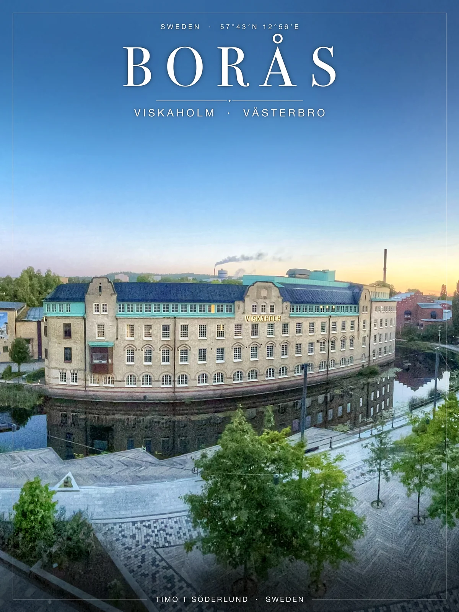

Viskaholm · Västerbro
Viskaholm Textile Heritage & Viskan · Borås, Sweden
English
From an elevated vantage point above Västerbro, golden twilight settles behind the historic Viskaholm textile complex along the Viskan river in Borås, Sweden. Warm evening light glows along the horizon while the brick facade and its illuminated signage reflect softly in the water below. Part of Borås Poster Project 2026 by Timo T Söderlund, capturing Boras, Sweden at dusk.
Svenska
Från en upphöjd utsiktspunkt vid Västerbro sänker sig ett gyllene skymningsljus bakom den historiska textilbyggnaden Viskaholm längs Viskan i Borås. Kvällsljuset glöder vid horisonten medan tegelfasaden och den upplysta skylten speglas stilla i vattnet nedanför. En del av Borås Poster Project 2026 av Timo T Söderlund.
Photographer & Edition: Timo T Söderlund · Borås, Sweden (2026)